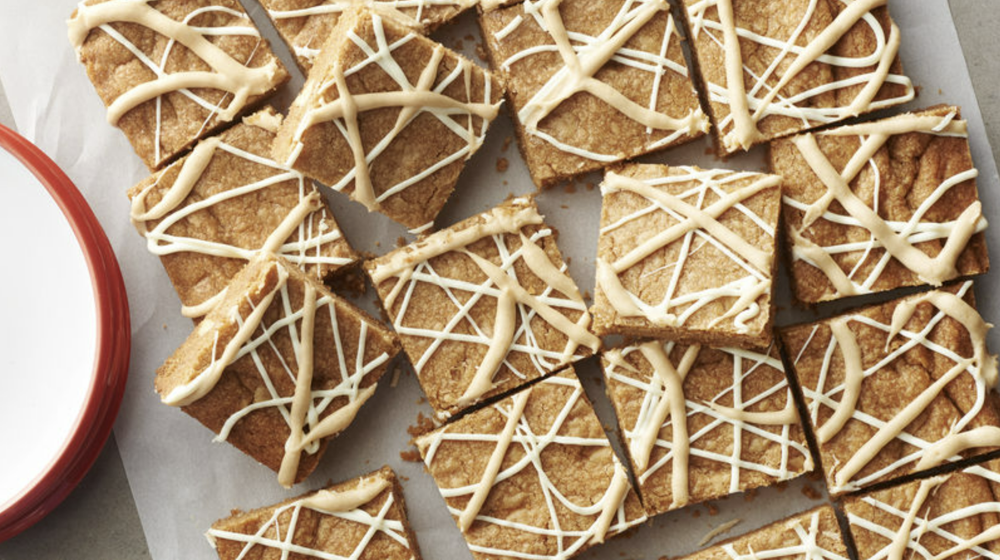
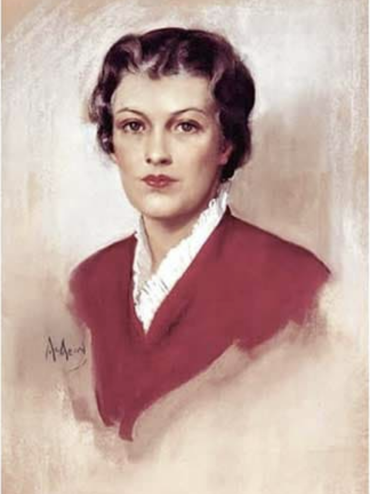
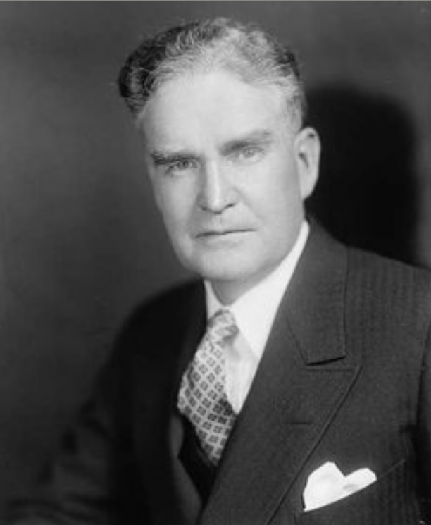
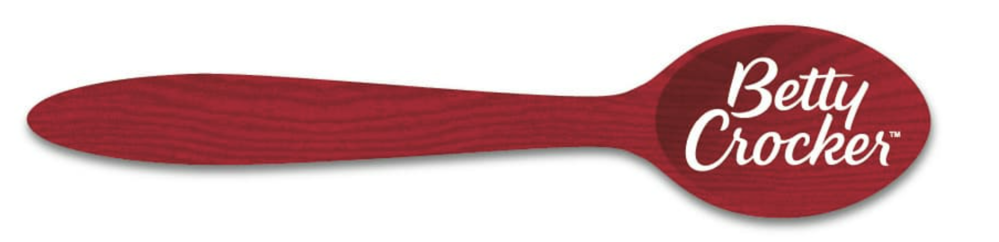

h
ABOUT US
Though she might not look it, Betty Crocker is nearly 100 years old, and she's still going strong with more than 12 million visitors to this website each month. Learn all about Betty's history, plus today's mission—here's everything you ever wanted to know about America's First Lady of Food!
First Lady Of Food
By the early 1940s, surveys showed that the name Betty Crocker was known to nine out of ten American homemakers. According to Fortune magazine in April 1945, she was the second best-known woman in America, followed by First Lady Eleanor Roosevelt. Betty Crocker became known as the First Lady of Food and in that position was called upon to help her country.
In 1945, at the request of the U.S. Office of War Information, Betty Crocker broadcast a radio program called, “Our Nation's Rations” to help homemakers make the most of rationed foods. Almost seven million copies of a Betty Crocker wartime booklet, “Your Share,” were distributed at this time. Another helpful Betty Crocker publication, “Thru Highway to Good Nutrition,” won national recognition by the American Red Cross for outstanding service in the national interest.
Face Changing

Just as food preferences, cooking methods and consumer interests have changed dramatically over the years, so has Betty Crocker. She has changed her looks seven times over the past century. Portraits were painted in 1936, 1955, 1965, 1969, 1972, 1980, 1986 and 1996. Over the years, her hairstyles and clothes have reflected the changing fashions of American women. Through it all, the goal has been to present an image of Betty Crocker to which modern women can related, an image that recalls the promise of thoroughly tested products and up-to-date recipes.
CREATION
Betty Crocker was created in 1921 by Washburn-Crosby and advertiser Bruce Barton. Under Marjorie Husted's supervision, the image of Betty Crocker became the "Zeus" of General Mills. In 1928, Washburn Crosby merged with other milling companies to form General Mills. In 1924, Crocker acquired a voice with the debut of "The Betty Crocker Cooking School of the Air" on one station in Minneapolis. It was the country's first radio cooking program. Blanche Ingersoll followed by Husted were selected to portray Betty Crocker. The show proved popular, and eventually was carried nationally on NBC Radio, with Agnes White as Betty. Over the next three decades, the women would anonymously portray Betty Crocker on the air and at cooking schools.
In 1929, Betty Crocker coupons were introduced. Inserted in bags of flour, they could be used to reduce the cost of Oneida Limited flatware. By 1932, this scheme had become so popular that General Mills began to offer an entire set of flatware; the pattern was called "Friendship" (later renamed "Medality"). In 1937, the coupons were printed on the outside of packages, copy on which told purchasers to "save and redeem for huge savings on fine kitchen and home accessories in our catalog".
The First Product
Believe it or not, the first food product with the Betty Crocker name was dried soup mix, introduced in 1942. Betty Crocker packaged cake mixes were introduced in 1947 with Ginger Cake, the precursor of today's Betty Crocker Gingerbread Cake. It was quickly followed by Devil's Food Cake Mix and Party Cake Mix, which could be made into yellow, white or spice cake by using water plus whole eggs, just the whites or by adding spices along with the eggs.